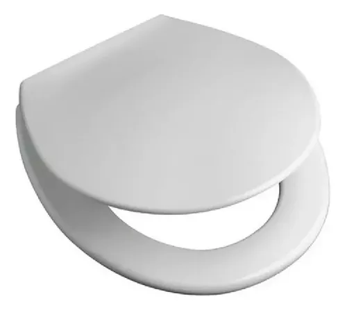
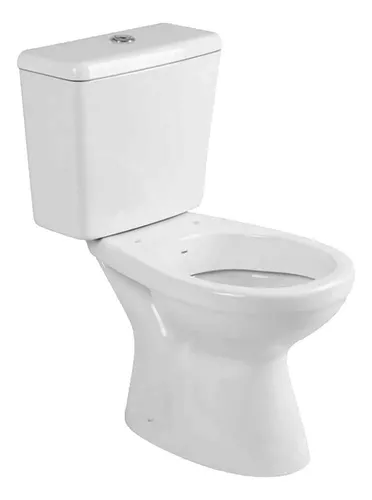
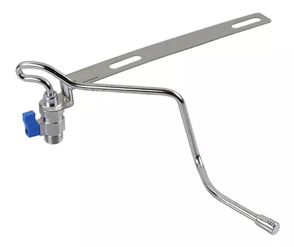
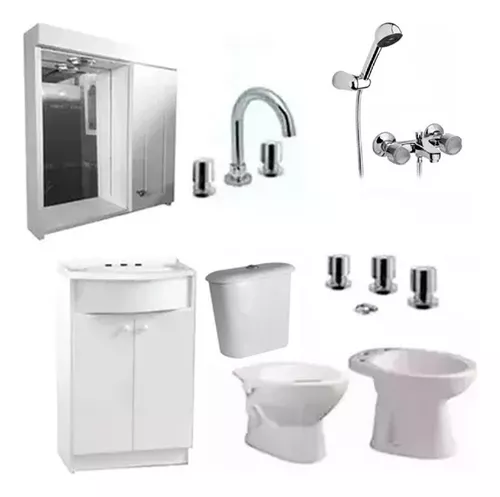

Aquí coloqué una imagen con enlace de compra de productos. Al hacer clic, te lleva a una tienda externa.

Una excelente tapa de inodoro, suave, cómoda y blanca al mejor precio. Pulsa la imagen para comprar.

Inodoro largo CAPEA ITALIANA BLANCO
el más fino de toda la toscana.

Bidematic Fría 1020 Dispositivo Bidet, para tener la colita bien limpia.

para los que no quieren perder tiempo en elegir y solo quieren tener un baño envidiable.